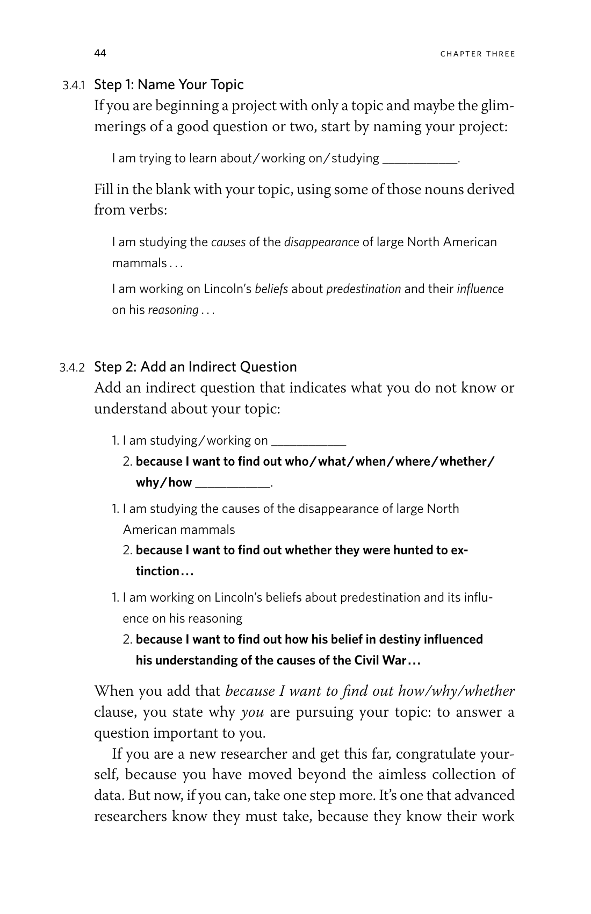
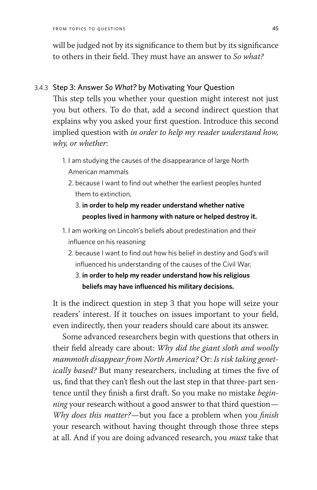
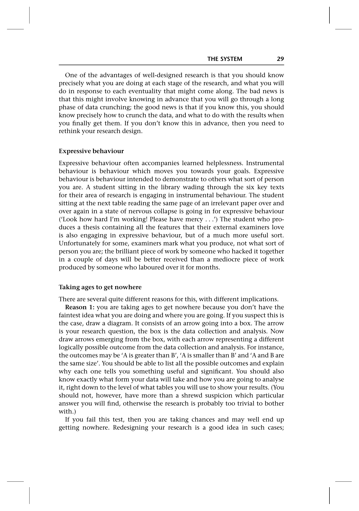
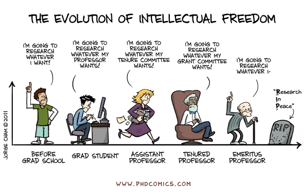
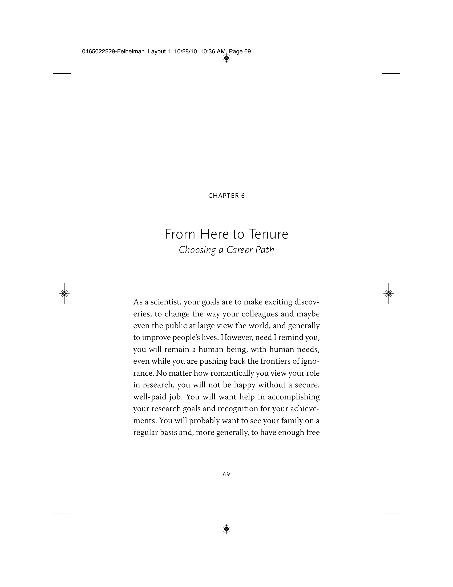
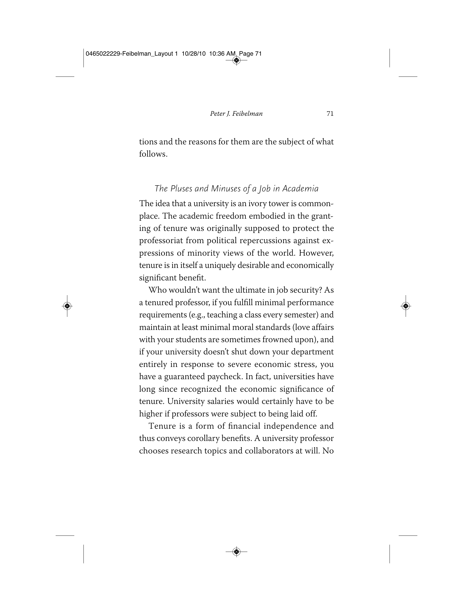

Turning topics into questions worth asking
In one sentence:
No jargon. No tool names.
If you say "ABAQUS" or "DIANA" in your sentence, start over.
These are not research questions yet. This is a way of thinking about your work: everything you do is either a task or aimed at answering a question. Both are real — but you need to know which is which.
Something you do. It has steps and a completion state, but no wrong answer.
“I'm using ABAQUS to model walls.”
Something you're trying to find out. It can be wrong — and that's what makes it research.
“Can fire-cut joist retrofits resist EF3 uplift without compromising reversibility?”
What tasks did you do this week? What questions were you answering?
Booth et al., The Craft of Research, 3.4.1–3.4.3

Sections 3.4.1–3.4.2: Name your topic, then add an indirect question

Section 3.4.3: Answer So what? by motivating your question
Kallas & Napolitano (2025), Int. J. Disaster Risk Reduction
Rugg & Petre, The Unwritten Rules of PhD Research, Ch. 3
Behavior that moves you toward your goal.
A student reading six key texts for their area.
Behavior that demonstrates effort but produces nothing.
A student reading the same irrelevant page over and over in a state of panic.
The three-step formula is a diagnostic: if you can fill in all three blanks, your work is instrumental. If you can only fill in step 1, you might be busy — but not aimed.

Expressive behaviour, learned helplessness, and taking ages to get nowhere
Now apply the three-step formula to your PhD.
The PhD opens several doors.
It helps to know what's behind each one.


Feibelman, From Here to Tenure: Choosing a Career Path

Feibelman, pp. 71–72: Academic freedom, tenure, and the reality of the job